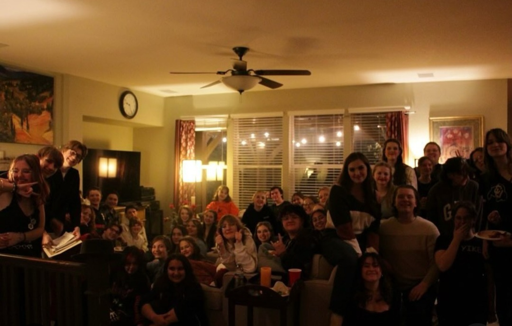
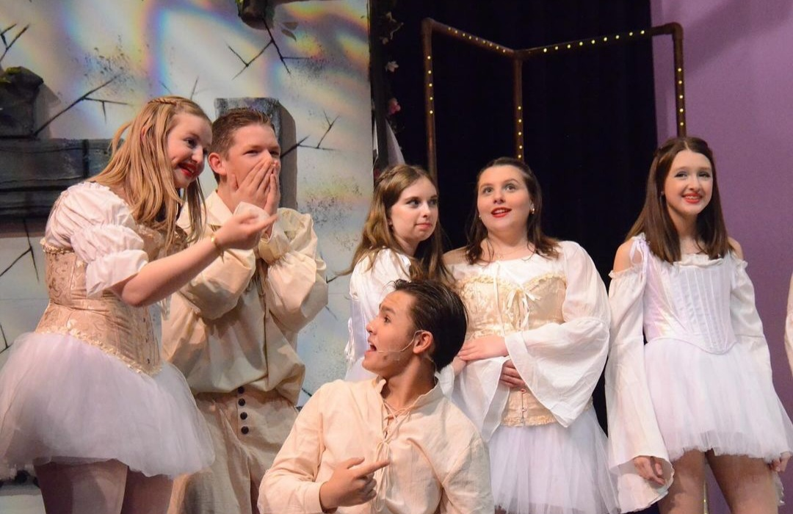
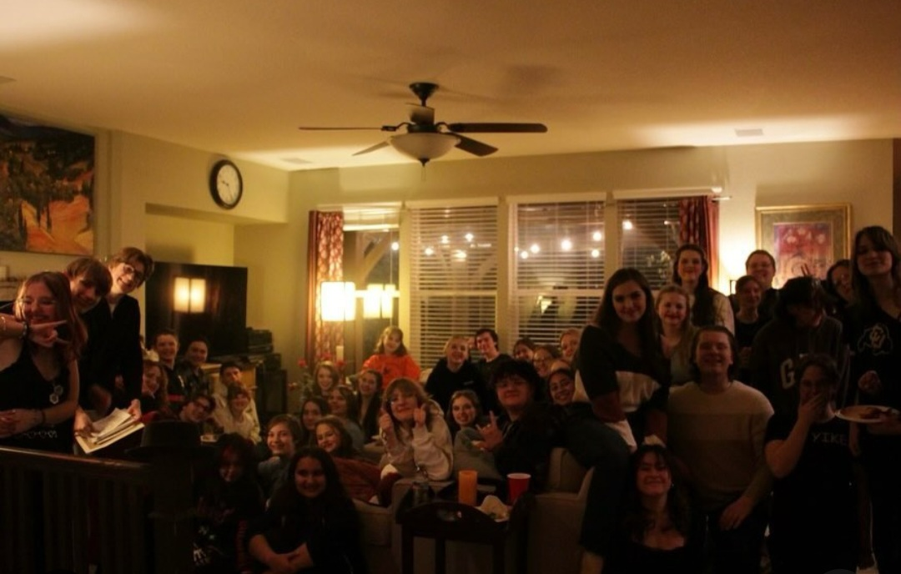
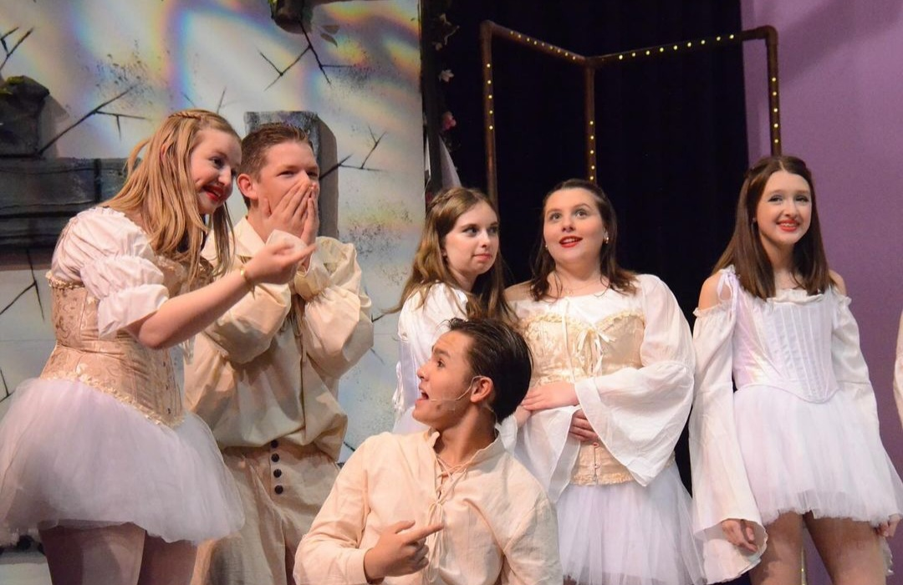
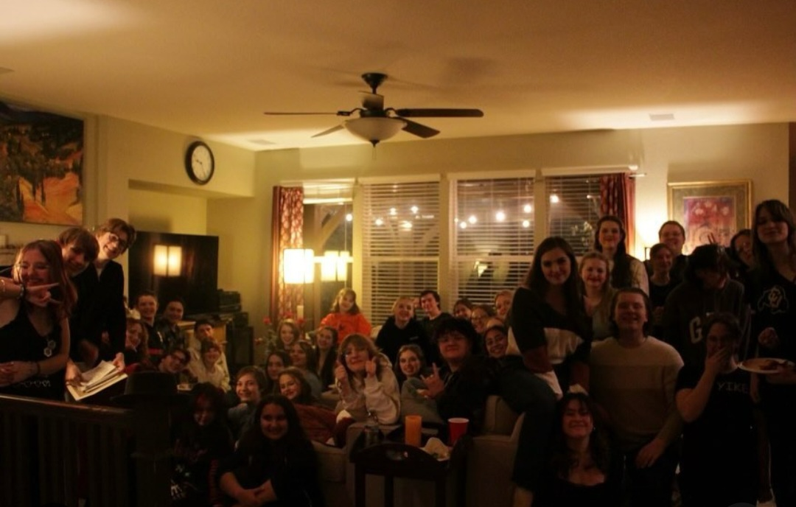
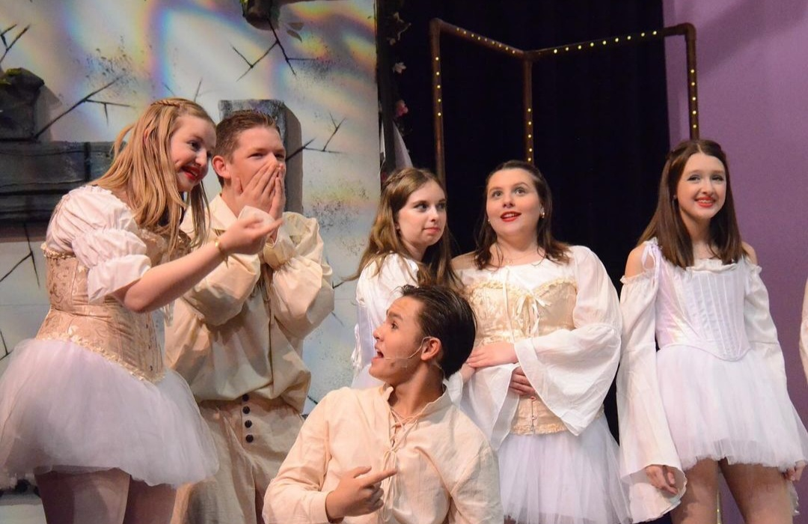

From props to lights, my three years in theatre before I stagemanaged my first show prepared me for this experience. Head Over Heels was the 2024 fall jukebox musical that I stage managed this year.
Taking inspiration from the orginization and methods of previous stage managers, I created a website and Google Drive to be centers of information that anyone in the cast or crew could access. I designed the lights and wrote the cues that I then called for the light board operator during the actual shows in addition to helping anywhere else that I was needed.

